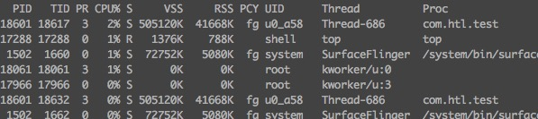
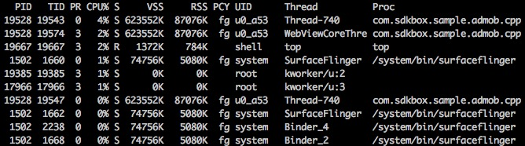

记一次android cpu使用率调试
有一次工作中,遇到cpu使用过高问题,我只是想简单地查看android手机上的cpu使用情况,这时其实可以用adb的shell命令联到andorid手机上来查看就行了
- 运行
adb shell,进到手机上的shell - 运行
top -m 10 -d 10 -t -s cpu来查看android手机上cpu的使用情况
我运行一个空工程, 然后查看cpu使用情况, 如图

可以看到 com.htl.test 这个包下有一个进程(18601), 这个进程中有两个线程 18617 和 18632
然后我运行了一个sample工程,再看手机上的cpu使用情况

可以看到 com.sdkbox.sample.admob.cpp 这个包下有一个进程(19528), 这个过程中有三个线程 19543 19574 19547,相比于空工程,多了一个线程 WebViewCoreThre (线程号为19574),而且可以看到它的cpu使用率在2%, 所以应该是在sample工程多启动了一个叫 WebViewCoreThre 的线程
PS. top的其它使用参数,可以运行 top -h 查看
PS. Android Studio中的cpu使用情况查看,真心不错,java代码的话,都可以统计到函数的调用时间图,太方便了. Android Moniter界面上就可以找到cpu的统计情况,如果只想简单些可以用上面的命令行top